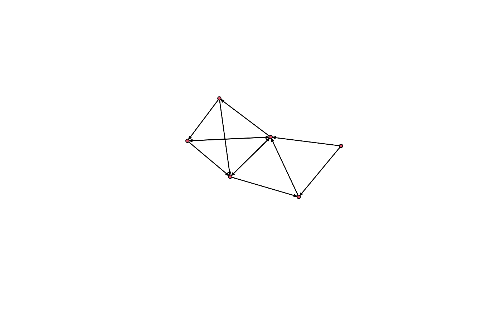
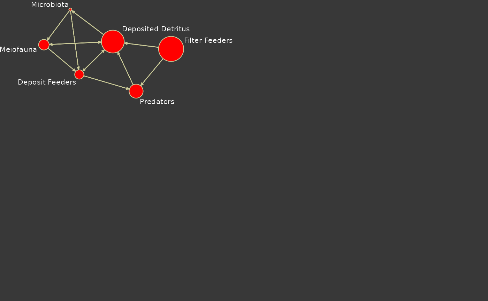

This page illustrates how to use visualize a network model using the
tools in enaR and the network package.
Load the library of models and select one to use for this illustration.
# load data
data(enaModels) # load library of Ecosystem Networks
names(enaModels) # view model names
#> [1] "Marine Coprophagy (oyster)"
#> [2] "Lake Findley "
#> [3] "Mirror Lake"
#> [4] "Lake Wingra"
#> [5] "Marion Lake"
#> [6] "Cone Springs"
#> [7] "Silver Springs"
#> [8] "English Channel"
#> [9] "Oyster Reef "
#> [10] "Baie de Somme"
#> [11] "Bothnian Bay"
#> [12] "Bothnian Sea"
#> [13] "Ythan Estuary"
#> [14] "Sundarban Mangrove (virgin)"
#> [15] "Sundarban Mangrove (reclaimed)"
#> [16] "Baltic Sea"
#> [17] "Ems Estuary"
#> [18] "Swartkops Estuary 15"
#> [19] "Southern Benguela Upwelling"
#> [20] "Peruvian Upwelling"
#> [21] "Crystal River (control)"
#> [22] "Crystal River (thermal)"
#> [23] "Charca de Maspalomas Lagoon"
#> [24] "Northern Benguela Upwelling"
#> [25] "Swartkops Estuary"
#> [26] "Sunday Estuary"
#> [27] "Kromme Estuary"
#> [28] "Okefenokee Swamp"
#> [29] "Neuse Estuary (early summer 1997)"
#> [30] "Neuse Estuary (late summer 1997) "
#> [31] "Neuse Estuary (early summer 1998)"
#> [32] "Neuse Estuary (late summer 1998)"
#> [33] "Gulf of Maine"
#> [34] "Georges Bank"
#> [35] "Middle Atlantic Bight"
#> [36] "Narragansett Bay"
#> [37] "Southern New England Bight"
#> [38] "Chesapeake Bay"
#> [39] "Mondego Estuary (Zostera sp. Meadows)"
#> [40] "Mdloti Estuary (C, March 2002)"
#> [41] "St. Marks Seagrass, site 1 (Jan.)"
#> [42] "St. Marks Seagrass, site 1 (Feb.)"
#> [43] "St. Marks Seagrass, site 2 (Jan.)"
#> [44] "St. Marks Seagrass, site 2 (Feb.)"
#> [45] "St. Marks Seagrass, site 3 (Jan.)"
#> [46] "St. Marks Seagrass, site 4 (Feb.)"
#> [47] "Sylt-Romo Bight (C)"
#> [48] "Graminoids (wet)"
#> [49] "Graminoids (dry)"
#> [50] "Cypress (wet)"
#> [51] "Cypress (dry)"
#> [52] "Lake Oneida (pre-ZM)"
#> [53] "Lake Oneida (post-ZM)"
#> [54] "Bay of Quinte (pre-ZM)"
#> [55] "Bay of Quinte (post-ZM)"
#> [56] "Mangroves (wet)"
#> [57] "Mangroves (dry)"
#> [58] "Florida Bay (wet)"
#> [59] "Florida Bay (dry)"
#> [60] "Hubbard Brook (Ca)(Waide)"
#> [61] "Hardwood Forest, NH (Ca)"
#> [62] "Duglas Fir Forest, WA (Ca)"
#> [63] "Duglas Fir Forest, WA (K)"
#> [64] "Puerto Rican Rain Forest (Ca)"
#> [65] "Puerto Rican Rain Forest (K)"
#> [66] "Puerto Rican Rain Forest (Mg)"
#> [67] "Puerto Rican Rain Forest (Cu)"
#> [68] "Puerto Rican Rain Forest (Fe)"
#> [69] "Puerto Rican Rain Forest (Mn)"
#> [70] "Puerto Rican Rain Forest (Na)"
#> [71] "Puerto Rican Rain Forest (Sr)"
#> [72] "Tropical Rain Forest (N)"
#> [73] "Neuse River Estuary (N, AVG)"
#> [74] "Neuse River Estuary (N, Spring 1985)"
#> [75] "Neuse River Estuary (N, Summer 1985)"
#> [76] "Neuse River Estuary (N, Fall 1985)"
#> [77] "Neuse River Estuary (N, Winter 1986)"
#> [78] "Neuse River Estuary (N, Spring 1986)"
#> [79] "Neuse River Estuary (N, Summer 1986)"
#> [80] "Neuse River Estuary (N, Fall 1986)"
#> [81] "Neuse River Estuary (N, Winter 1987)"
#> [82] "Neuse River Estuary (N, Spring 1987)"
#> [83] "Neuse River Estuary (N, Summer 1987)"
#> [84] "Neuse River Estuary (N, Fall 1987)"
#> [85] "Neuse River Estuary (N, Winter 1988)"
#> [86] "Neuse River Estuary (N, Spring 1988)"
#> [87] "Neuse River Estuary (N, Summer 1988)"
#> [88] "Neuse River Estuary (N, Fall 1988)"
#> [89] "Neuse River Estuary (N, Winter 1989)"
#> [90] "Cape Fear River Estuary (N, oligohaline)"
#> [91] "Cape Fear River Estuary (N, polyhaline)"
#> [92] "Lake Lanier (P) Averaged"
#> [93] "Great Lakes (N)"
#> [94] "Baltic Sea (N)"
#> [95] "Chesapeake Bay (N)"
#> [96] "Chesapeake Bay (P)"
#> [97] "Chesapeake Bay (P, Winter)"
#> [98] "Chesapeake Bay (P, Spring)"
#> [99] "Chesapeake Bay (P, Summer)"
#> [100] "Chesapeake Bay (P, Fall)"
#> [101] "Sylt-Romo Bight (N)"
#> [102] "Sylt-Romo Bight (P)"
#> [103] "Beijing Urban Metabolism (C)"
#> [104] "Vienna Urban Metabolism (C)"
m <- enaModels[[9]] # select the oyster modelSimple Plot
We can then create a simple plot of the model with the default graphics parameters as
# Set the random seed to control plot output
set.seed(2) # this is only used to ensure our plots look the same.
# Plot network data object (uses plot.network)
plot(m)
Fancy Plot
We can create a fancier plot by exerting more control on the plotting parameters. Here is an example.
## Set colors to use
my.col <- c('red','yellow',rgb(204,204,153,maxColorValue=255),'grey22')
## Extract flow information for later use.
F <- as.matrix(m,attrname='flow')
## Get indices of positive flows
f <- which(F!=0, arr.ind=T)
opar <- par(las=1,bg=my.col[4],xpd=TRUE,mai=c(1.02, 0.62, 0.82, 0.42))
## Set the random seed to control plot output
set.seed(2)
plot(m,
## Scale nodes with storage
vertex.cex=log(m%v%'storage'),
## Add node labels
label= m%v%'vertex.names',
boxed.labels=FALSE,
label.cex=0.65,
## Make rounded nodes
vertex.sides=45,
## Scale arrows to flow magnitude
edge.lwd=log10(abs(F[f])),
edge.col=my.col[3],
vertex.col=my.col[1],
label.col='white',
vertex.border = my.col[3],
vertex.lty = 1,
xlim=c(-4,1),ylim=c(-2,-2))